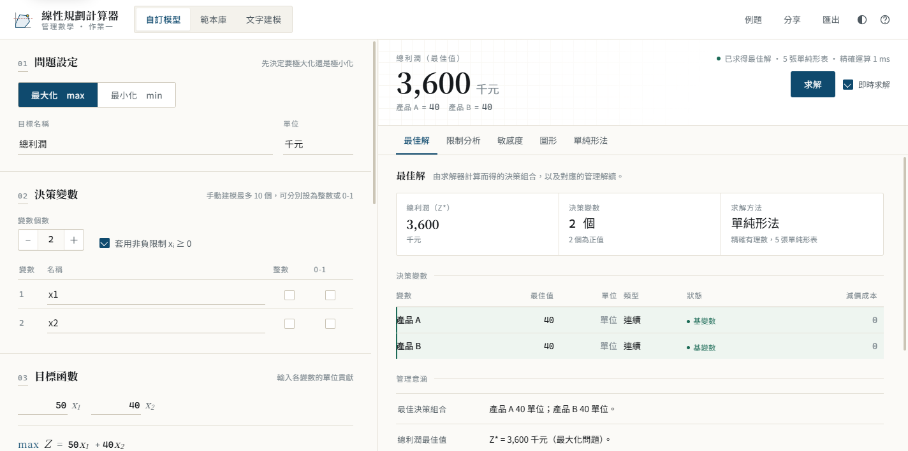
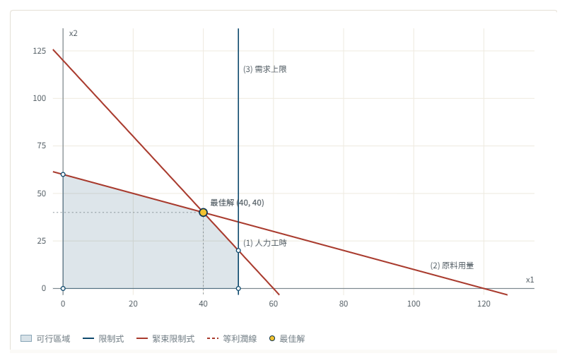
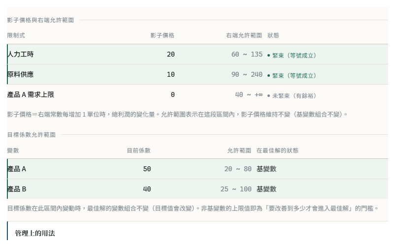
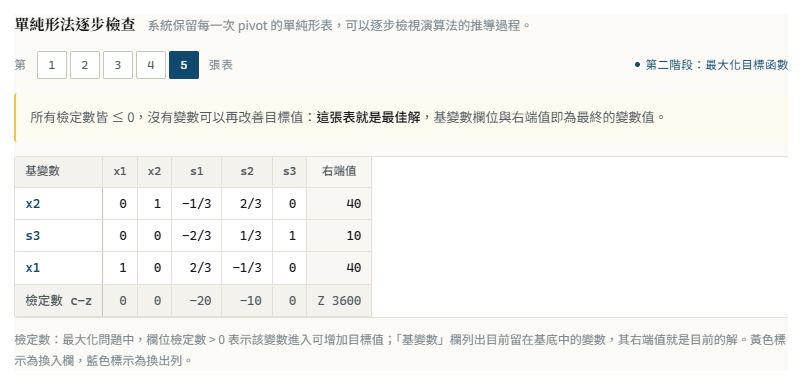

把「建立模型 → 自動求解 → 結果解讀」壓縮在同一個畫面。左邊輸入係數與限制式， 右邊即時算出最佳解、影子價格與可行區域；所有數字都是精確有理數，不是浮點近似。
| 課程名稱 | 管理數學 | 繳交項目 | 網頁專案、系統說明文件 |
|---|---|---|---|
| 組別 | 個人組／多人組（請勾選） | 學號／姓名 | ＿＿＿＿＿＿＿＿＿＿＿＿ |
| 開發工具 | HTML／CSS／JavaScript（無框架、無建置） | 繳交日期 | 2026 年 ＿＿ 月 ＿＿ 日 |

系統主畫面。左側依序完成問題設定、決策變數、目標函數與限制式；右側立即呈現最佳解、變數表與自動產生的管理意涵。
管理數學的難點很少是「按計算機」，多半是「模型建立得對不對」以及「算出來的數字代表什麼」。 這套系統把三個環節接成一條線：輸入即模型、模型即求解、 求解即解讀。使用者不必先懂單純形法，也能看到它怎麼運作。
求解核心以 BigInt 分數實作，樞紐運算都是分數加減乘除。因此影子價格顯示成 50/3，
不會變成 16.666666；敏感度範圍也是精確邊界。
每次修改係數、改變「≤／≥」、增刪變數，右側會在 140 毫秒內重算。可以像調旋鈕一樣觀察最佳解怎麼跳動。
自動產生「最佳決策組合、瓶頸資源、仍有餘裕的資源、資源邊際價值」等段落，把 x₁ = 40、Z* = 3,600 轉成可以直接寫進報告的句子。
單純形法保留每一次 pivot 的完整表格（含第一階段人工變數），可逐張對照課本；兩變數問題另有可行區域圖與可拖動的等利潤線。
| 作業要求 | 本系統實作 | 狀態 | 位置 |
|---|---|---|---|
| 問題類型（最大化／最小化） | 切換後自動重建數學模型，目標函數同步改寫 | 完成 | 問題設定 |
| 決策變數與非負限制 | 1～10 個可命名變數；可取消非負限制（改以自由變數拆分處理） | 完成 | 決策變數 |
| 目標函數輸入與自動顯示 | 係數即時排版成數學式，支援分數輸入 | 完成 | 目標函數 |
| 多條限制式與完整模型顯示 | ≤／=／≥ 與右端值；模型以 max、subject to、非負與整數條件排版呈現 | 完成 | 限制式／模型預覽 |
| 整數規劃／0-1 規劃 | 分支定界法，含節點紀錄與 LP 鬆弛差距 | 完成 | 整數規劃 |
| 求解、最佳解與 Z* | 兩階段單純形法；無可行解／無界解皆有專屬說明與檢查建議 | 完成 | 最佳解 |
| 結果解讀與限制式狀態 | 自動生成管理意涵；列出左側值、右側值、鬆弛／盈餘、緊束與影子價格 | 完成 | 最佳解／限制分析 |
| 敏感度分析 | 影子價格、右端允許範圍、目標係數允許範圍 | 完成 | 敏感度 |
| 圖形分析（兩變數） | 限制式、可行區域、頂點、最佳解、可拖動等利潤線 | 完成 | 圖形 |
| 進階：範本庫與文字建模 | 運輸、指派、生產計劃三個範本，走完「輸入→建模→求解→分析」；另有自然語言與速記格式建模 | 完成 | 範本庫／文字建模 |
以「生產組合決策」為例：兩條產線共用人力與原料，另受產品 A 的需求上限限制。系統算出最佳生產方案為 A、B 各 40 單位，總利潤 3,600 千元；人力與原料兩條限制式在最佳解下等號成立，影子價格分別為 20 與 10， 代表每多一單位人力可再增加 20 千元利潤，而產品 A 的需求上限還有 10 單位餘裕、不是瓶頸。


「限制分析」分頁把每條限制式的左側值、鬆弛或盈餘量、是否緊束與影子價格並列；「單純形法」分頁則保留每一次 pivot 的表格（黃色為換入欄、藍色為換出列），最後一張表就是最佳解，可與課本逐格核對。
7/3）。
| 層次 | 作法與理由 |
|---|---|
| 前端框架 | 不使用框架，以原生 JavaScript 分層撰寫。完全離線、雙擊 index.html 就能執行，不需要 npm 或伺服器。 |
| 數值表示 | Fraction 類別以 BigInt 儲存分子分母，全程精確運算；顯示時才轉成小數或分數。 |
| 求解演算法 | 兩階段單純形法（Phase I 建立可行基、Phase II 求最佳解），Dantzig 規則搭配退化時改用 Bland 規則避免循環。 |
| 敏感度與整數 | 由 B⁻¹ 推出影子價格與允許範圍；整數規劃以分支定界求解，並以目前最佳整數解剪枝。 |
| 圖形與版面 | 可行區域以半平面裁切（Sutherland–Hodgman）求交後輸出 SVG；版面以 CSS 設計權杖控制，含深色模式與 A4 列印樣式。 |
運輸問題：供需不平衡時，系統自動補上成本為 0 的虛擬供給列或需求欄，讓等式限制式維持成立， 並在提示中說明補了什麼；結果以矩陣呈現，同時標出各列已出貨量與各欄需求量。 指派問題：直接以 LP 求解即可，因為指派問題的限制矩陣具全單模性，鬆弛解必然落在 0-1 頂點， 所以不需要分支。 文字建模：採離線規則引擎（不呼叫外部 API），先抽取產品、單位貢獻、資源耗用與上限， 再列出「找到了什麼」與信心度；解析結果一定回到可編輯的表單，避免黑箱。
單向資料流：輸入 → 模型物件 → 求解引擎 → 結果物件 → 視圖。引擎完全不碰 DOM，因此可以直接用 Node.js 跑單元測試；視圖層也不做數學，只負責排版。
LPCalculator/ index.html 主畫面（單頁應用，無需建置） assets/css/app.css 設計權杖、版面、深色模式、A4 列印樣式 assets/js/fraction.js 精確有理數（BigInt 分子／分母） assets/js/solver.js 兩階段單純形法、敏感度、分支定界 assets/js/model.js 模型物件、驗證、數學式排版、管理意涵 assets/js/recipes.js 內建例題與三種管理科學範本 assets/js/parser.js 文字建模（自然語言規則引擎） assets/js/graph.js 可行區域圖（SVG 半平面裁切） assets/js/views.js 結果分頁、單純形表、列印報告 assets/js/app.js 狀態管理、事件綁定、匯出 tests/engine.test.js 引擎自我檢測（41 項） docs/ 系統說明文件與截圖
執行 node tests/engine.test.js，目前 41 項全部通過，涵蓋無可行解、無界解、等式限制式、
右端為負、自由變數、退化問題與多重最佳解。
一開始我以為難點在「畫表格」，動手後才發現真正的問題在數值。用浮點數寫單純形法時， 影子價格常常變成 0.9999999 或 −2.3e−14，一看就知道不對；改成 BigInt 分數後，樞紐運算變成整數通分， 不但答案乾淨，連允許範圍都能給出精確邊界。
第二個體會是敏感度不是另一個模組，而是最佳解的副產品。只要在最終表留住初始基變數的欄位， B⁻¹ 就在那裡；影子價格、右端範圍、目標係數範圍全由它推得。理解這件事之後，我才真正看懂 「為什麼影子價格等於檢定數」。
最後是介面。我刻意讓結果「跟著輸入跑」：改一個係數，右邊的最佳解與圖形立刻變。用這種方式理解敏感度， 比讀十頁公式有效——把產品 A 的利潤一路往上調，看著最佳解從 (40, 40) 跳到 (50, 0)， 就會明白「目標係數允許範圍」在說什麼。
如果時間再多一些，想補上運輸問題的 MODI／階石法對照、多重目標規劃，以及把文字建模接上真正的大型語言模型， 讓它讀懂更口語的題目描述。
index.html（建議 Chrome／Edge）。所有計算都在瀏覽器本機完成，
不需網路、也不上傳任何資料。